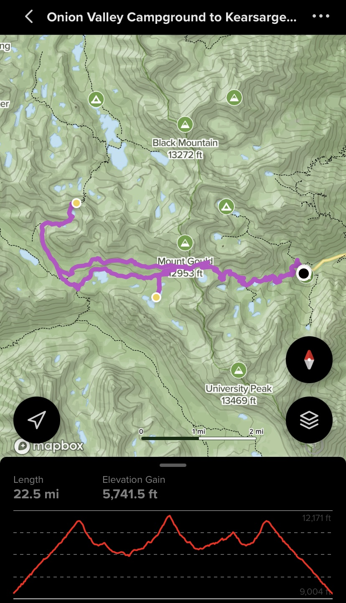

Nat, Isa, Aglaia, Lukas, Liam and I backpacked Kearsarge Pass in the Sierras over 3 days and then Aglaia and I went and did Nutcracker 5.8 5p and Snake Dike 5.7R 8p in Yosemite w/ a few other adventures... SOOOOO FUNNNN!

Check out the full report here with pictures!!!!
Alltrails Kearsarge Pass Backpacking Trail
Backpacking in to Snake Dike and Climbing up Half Dome (Alltrails)